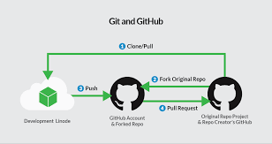

Un Pull Request (PR) en GitHub es una solicitud para fusionar cambios desde una rama (por ejemplo, tr) a otra (normalmente main o master) dentro de un repositorio. Es una herramienta clave en el desarrollo colaborativo de software.
-Desde Git Bash, ya habiendo realizado los cambios en el archivo. git push origin tr -habiendo hecho el push accede al repositorio cambia a la rama que deses que se fusione con la rama main en este caso. -Haz clic en “Compare & pull request”. -Completa los detalles y haz clic en “Create pull request”.
¿Qué necesitas?
-Ser colaborador con permisos de escritura en el repositorio.
-Acceso al Pull Request abierto que quieres revisar.
Accede al repositorio en GitHub
Accede al boton Pull requests
Haz clic en el Pull Request que quieres revisar
Revisa los cambios
Aprobar el Pull Request
Selecciona la opción “Approve”.
(Opcional) Escribe un comentario de aprobación.
Haz clic en “Submit review”.
Haz clic en ese botón para fusionar los cambios con la rama principal (por ejemplo, main).
Luego, haz clic en “Confirm merge”.
Revisa con atención, no con apuro
Verifica que el cambio cumple su objetivo
Revisa estilo y format
Evalúa la estructura del código
Asegúrate de que el código tenga pruebas
Detecta posibles errores o riesgos ¿Hay código que podría fallar con ciertos datos?
Sugiere mejoras, no solo señalas problemas
Fomenta el aprendizaje
Revisa solo lo necesario Si un PR es demasiado grande, sugiere dividirlo.